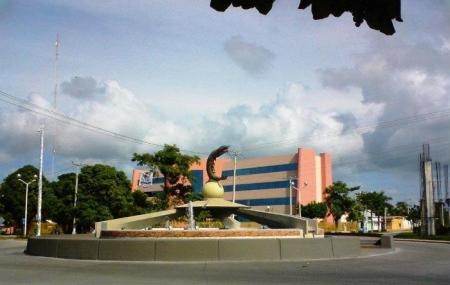

Monumento al camarón: Aquel que recorió el mundo
|  | Se encuentra en Cd del Carmen, una de las islas que hay en México en el estado Campeche y es uno de los emblemas de la ciudad. Fue inaugurado en 1967 en honor a este crustaceo que representa una parte importante de la identidad de la isla. Cd del Carmen es una isla con muchas bellezas naturales y recurzos (por eso se le conoce como La Perla del Golfo), entre estos se encuentra el camarón que representó la mayor actividad económica de la Isla en buena parte del siglo pasado. El camarón que aquí se extraía era exportado a Asia y Europa donde se servían en exquisitos platillos. |
Quizás no sea el monumento más bonito pero en este caso tampoco debemos juzgar las cosas por su fachada.
Este monumento representa aquel recurso que le dió la posibilidad a muchas familias de la isla, vivir una
vida digna con estabilidad económica y prosperidad. Representa una parte importante de esta isla visitada
por barcos de corsarios y hoy por barcos de empresas multimillonarias de petróleo. Representa a
exportaciones de una pequeña isla, de unos 30km de largo, a los países más emblemáticos del mundo. Representa
a esas embarcaciones que llevaban este recurso y le dieron la vuelta al mundo.
Por: José Gustavo Kuri R.
Un simple chico más que quiere aprender programación :)